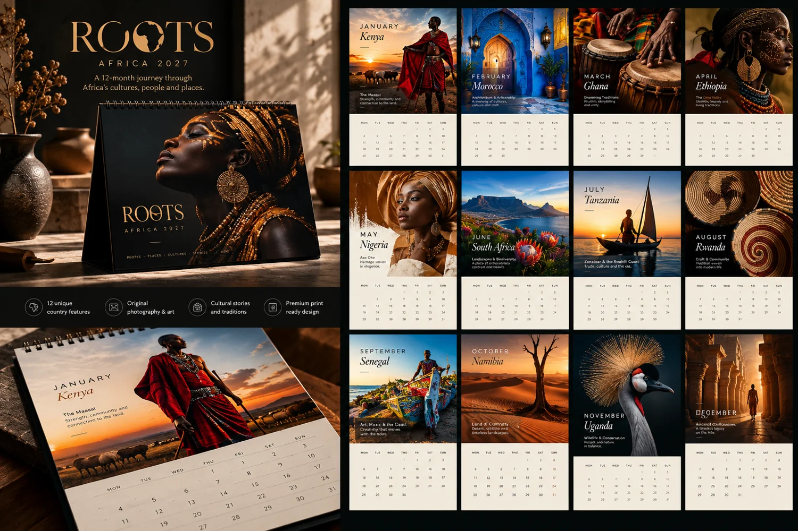
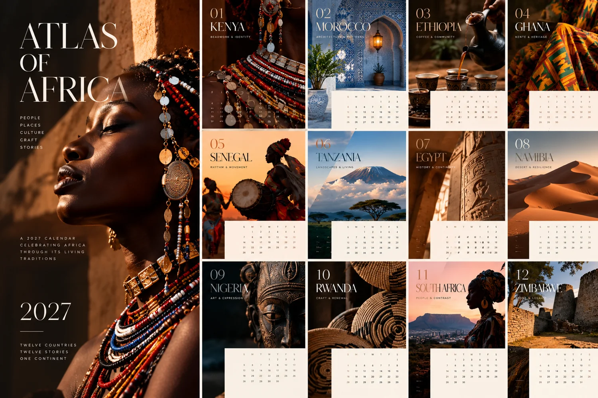
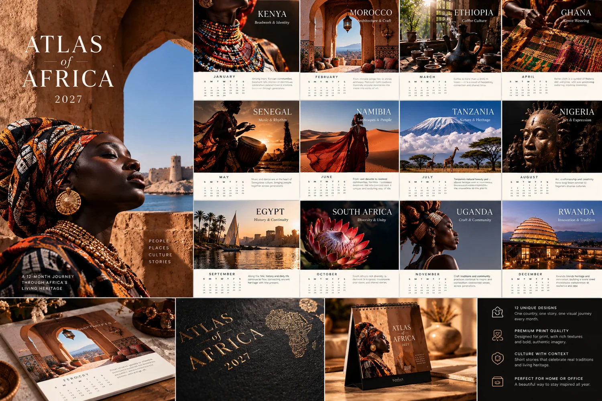
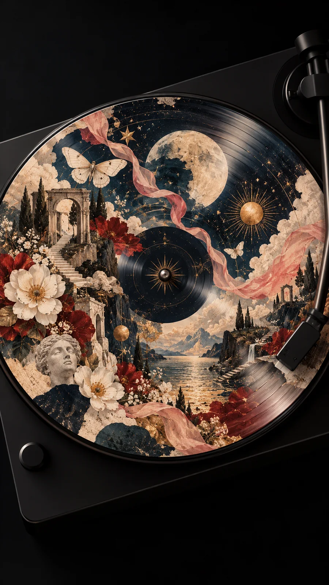
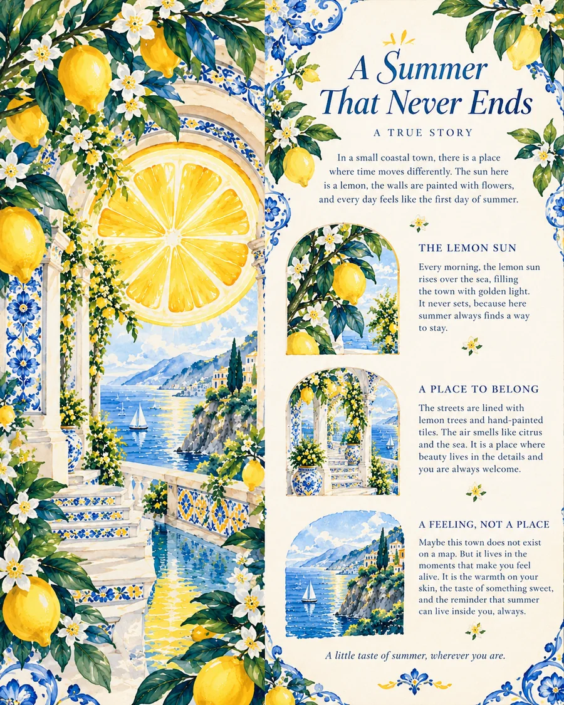

for a more imaginative world
Impossible
ideas,
made visible.
We explore identities, digital experiences and visual stories that make people feel something. A space where curiosity turns into work worth sharing.
Explore the studio ↗A selection
of recent work.
From expressive brand identities to digital products, illustration and print. Every project has its own point of view.

Fashion identity & digital experience

Immersive illustration & motion

Eight editorial event posters

Cultural art calendar · Edition 01

Cultural art calendar · Edition 02

Cultural art calendar · Edition 03

Product interface concept

Conceptual illustration

Wearable visual identity

Editorial art experiment
Design. Build.
Experiment.
Repeat.
We're an independent creative studio exploring the intersection of ideas, design and technology. Thoughtful in process, playful in spirit, and always curious about what comes next.
Discover our journal ↗